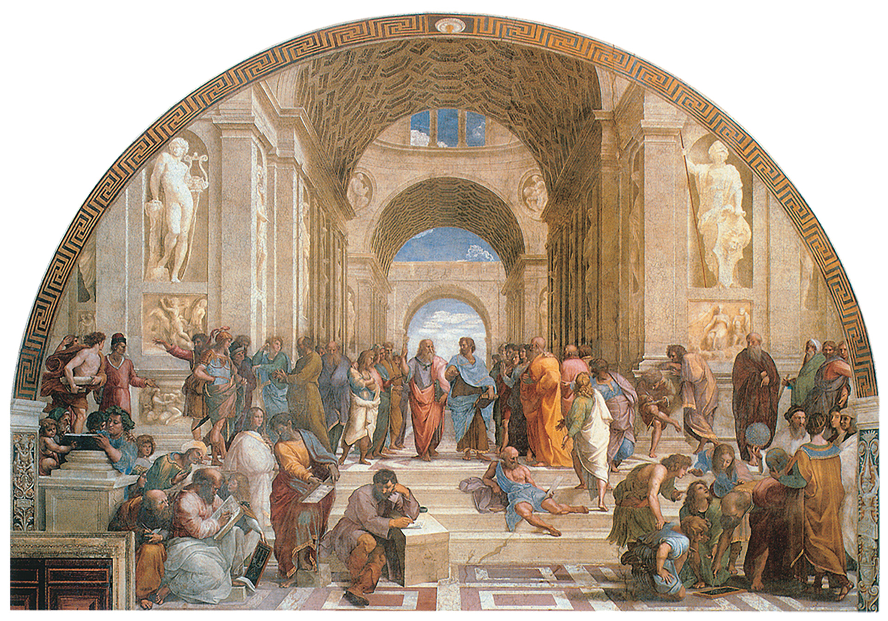
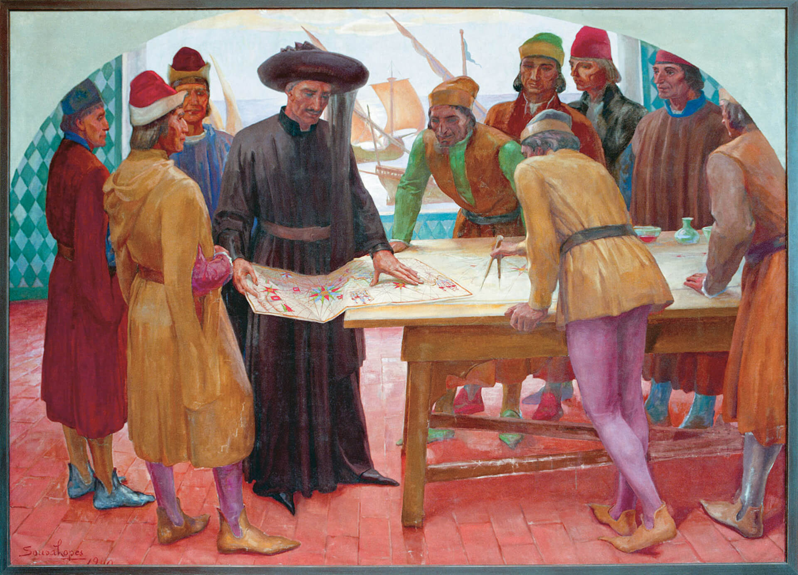
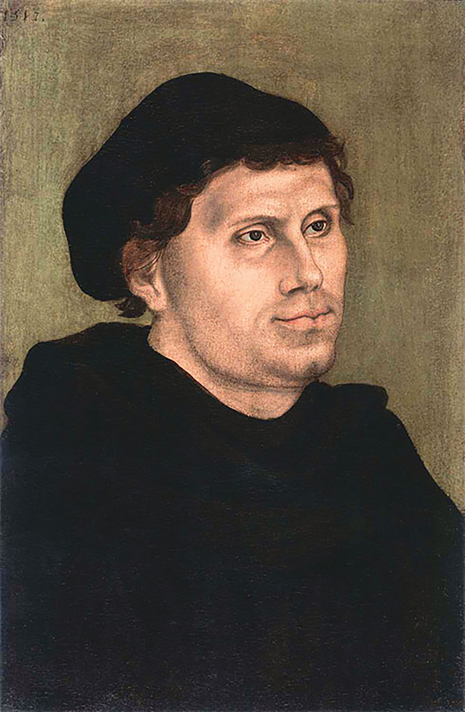
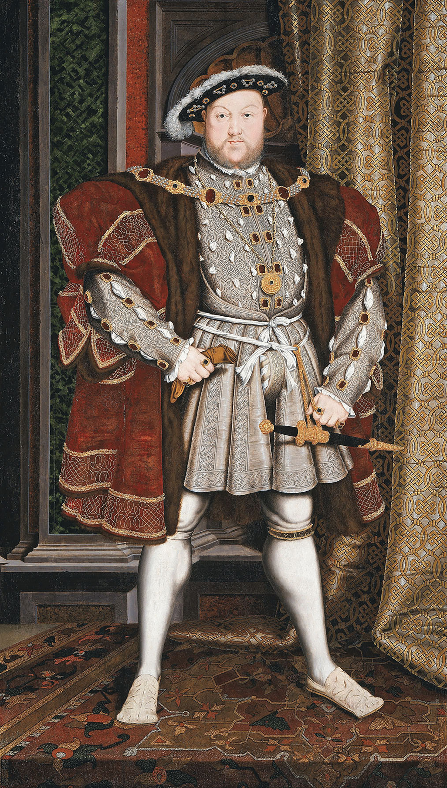
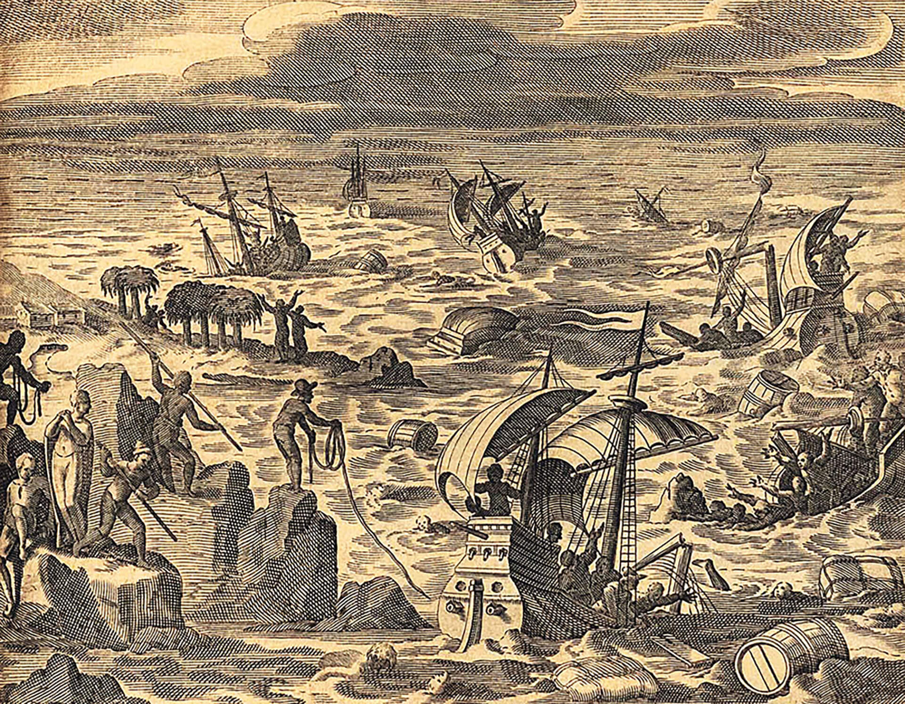

RIGAUD, Hyacinthe. Retrato de Luís XIV. 1701. 1 óleo sobre tela, color., 279 cm × 190 cm. Museu do Louvre, Paris.
Introdução
Esse retrato representa o rei Luís XIV, considerado o maior governante absolutista da França. Ele se autointitulou Rei-Sol. Pesquise os motivos que o levaram a escolher tal denominação e escreva suas conclusões.
Objetivos
Retomar a forma de organização social, política e econômica que caracterizou o Feudalismo na Europa Ocidental.
Destacar a participação da burguesia nos processos de desenvolvimento urbano e comercial.
Compreender o conceito de absolutismo e o processo de centralização política que ocorreu na Europa no fim da Idade Média e início da Idade Moderna.
Compreender a organização social do Antigo Regime.
Identificar os teóricos do absolutismo, destacando as principais obras de cada um.
Analisar o mercantilismo e suas principais práticas econômicas, relacionando-o aos governos absolutistas.
A Modernidade não influenciou apenas as artes e o conhecimento humano. As mudanças que ocorriam na sociedade europeia também alteraram o poder e como ele estava organizado na Idade Média. Surge, então, um novo modelo de poder no
cenário europeu durante a Idade Moderna.
Organize as ideias
Analise as afirmações a seguir e escolha, entre as duas opções de palavras, qual delas completa corretamente a sentença.
a) A sociedade feudal se formou na Europa Ocidental no período de desagregação do Império Romano do _______________ (Ocidente / Oriente).
b) Durante o Feudalismo, predominava uma economia _______________ (agrária / urbana).
c) Os _______________ (servos / nobres) eram o grupo social que tinha a posse das terras durante o Feudalismo.
d) Na concessão do feudo, aquele que doava as terras era o _______________ (suserano / vassalo). Aquele que recebia era o _______________ (suserano / vassalo).
e) O poder durante a Idade Média estava _______________ (descentralizado / centralizado) nas mãos dos senhores feudais.
f) Na Baixa Idade Média, as cidades que surgiram em torno das feiras eram chamadas de _______________ (poleis / burgos).
g) No comércio realizado nas feiras, um complicador era a circulação de diversas moedas, pois cada _______________ (feudo / Estado) tinha o próprio dinheiro.
h) Com o crescimento das cidades, os moradores criaram as _______________ (comunas / guildas), que defendiam os interesses dos burgueses com relação aos senhores feudais.
Fortalecimento da burguesia e do absolutismo
Uma das principais mudanças da Idade Média em relação ao mundo romano foi a fragmentação (descentralização) do poder político, o qual estava dividido entre os senhores feudais. Os reis existiam, mas o poder deles era limitado à
administração de poucas vilas e das próprias terras. Diante das transformações causadas entre os séculos X e XV e, sobretudo, pela Crise do Século XIV, essa situação começou a mudar.
A diminuição da população, decorrente do surto de Peste Negra, intensificou a exploração dos trabalhadores do campo e da cidade. Entretanto, eles se revoltaram e reivindicaram melhores condições de trabalho. Os senhores feudais, com
seus pequenos exércitos, não conseguiam restabelecer a ordem. Mesmo contra a vontade, a solução foi reunir exércitos para torná-los mais fortes, que teriam um único líder: o rei.
Os burgueses, por sua vez, também estavam descontentes com a desordem, visto que desestabilizava seus negócios. Além disso, a existência de vários feudos, cada um com seu sistema de pesos e medidas, moeda, leis e impostos, dificultava
as negociações. Para os comerciantes, apoiar a iniciativa de concentrar o poder militar e político em um rei poderia proporcionar a unificação e acabar com todas essas diferenças. Por esse motivo, passaram a ajudar financeiramente o
nobre comandante a fim de os exércitos serem formados.
Com o apoio financeiro da burguesia, o poder político do rei foi se fortalecendo, e seus exércitos tornaram-se também cada vez mais fortes. Assim, o poder, antes fragmentado, concentrava-se nas mãos de um único indivíduo. As terras que
antes formavam feudos independentes começavam a se unificar integrando um só reino.
Europa no século XVII

Luciano Daniel Tulio
Fonte: ALBUQUERQUE, Manoel M. de. Atlas histórico escolar. Rio de Janeiro: Fename, 1977. p. 71, 104 e 105. Adaptação.
Organize as ideias
Responda às seguintes questões.
De que forma a unificação de territórios sob o governo de um rei poderia beneficiar os burgueses?
Para os nobres feudais, qual foi a consequência da concentração do poder político nas mãos do rei?
Embora a burguesia tenha sido o grupo que mais se beneficiou com a concentração do poder político e do militar nas mãos dos reis, a nobreza não foi excluída dessa nova organização social. Ela passou a compor um grupo de funcionários
públicos que ajudava os reis a administrar seus territórios.
Desse grupo, também faziam parte alguns burgueses. O conjunto composto pelo rei, por seu exército e por seus funcionários formava o Estado. Apesar desse corpo de auxiliares, o monarca era a autoridade máxima e suas decisões eram
incontestáveis. A essa estrutura, que concentrava todo o poder na pessoa do rei, damos o nome de absolutismo monárquico ou monarquia absolutista.
Troca de ideias
O absolutismo foi a forma de organização política que caracterizou os Estados Nacionais Modernos. Nos dias atuais, no entanto, há outras formas de organização política.
Reflita e responda: Quais são as outras maneiras de se governar um Estado? Quais seriam as diferenças entre essas formas de governo e o absolutismo monárquico? Discuta essas questões com seus colegas e registre as respostas no espaço
que segue.
Teóricos do absolutismo
O processo que proporcionou a concentração do poder político e militar nas mãos dos reis absolutistas ocorreu em meio ao Renascimento Cultural. Nesse período, pensadores e filósofos, buscando uma nova forma de compreender a sociedade,
criaram inúmeros tratados e teorias com o objetivo de explicar o funcionamento social. Nesse contexto, surgiram teóricos que legitimavam a concentração do poder entre os reis absolutistas.
Dante Alighieri, em sua obra Monarquia, defendeu a importância de haver apenas um homem no comando do Estado. Afirmou, ainda, que o soberano deveria ter autonomia para tomar as próprias decisões, sem haver a
interferência de membros da Igreja Católica. Segundo Alighieri, o homem dotado de razão deveria governar orientado diretamente por Deus, não necessitando dos intermediários membros do clero.

Capela de San Brizio, Orvieto
SIGNORELLI, Luca. Dante Alighieri. 1 afresco da Capela de San Brizio, Duomo de Orvieto, Orvieto. Detalhe.
Atualmente, é comum as pessoas chamarem de maquiavélica uma atitude má, calculada, feita para beneficiar uma pessoa mesmo que isso signifique causar o mal a outra ou várias outras. Os termos
“maquiavelismo” ou
“maquiavélico” derivam do nome de Nicolau Maquiavel, um dos teóricos que tentou justificar o poder absolutista dos reis.

Palazzo Vecchio, Florença
TITO, Santi di. Retrato de Nicolau Maquiavel. [Segunda metade do século XVI]. 1 óleo sobre painel, color., 104 cm × 85 cm. Palazzo Vecchio, Florença.
Nicolau Maquiavel viveu em Florença, entre 1469 e 1527. Nessa época, o território da Itália era todo fragmentado em Estados independentes, que, frequentemente, estavam em conflito entre si. Nesse contexto, escreveu
um livro chamado O príncipe. Na obra, Maquiavel defendia que a unificação de territórios e a concentração do poder nas mãos de um único líder poderiam ser ações benéficas para a sociedade. Esse líder, chamado por ele de
príncipe,
deveria fazer tudo que fosse necessário para manter a unidade, mesmo que isso significasse tomar, algumas vezes, atitudes condenáveis.
Interpretando documentos
Maquiavel defendia a ideia de que a humanidade é movida pelo egoísmo e pelos interesses materiais. Assim, aconselhou os governantes a desconfiar da lealdade de seus súditos. Leia a seguir alguns dos conselhos que Maquiavel deixou
registrados para os governantes em sua obra O príncipe.
É melhor ser mais amado que temido, ou mais temido que amado? Idealmente, é preciso ser temido e amado, mas é difícil reunir os dois sentimentos. Se um dos dois precisa ser sacrificado, é mais seguro ser temido que amado.
Geralmente
os homens são ingratos, desonestos, covardes e gananciosos. Enquanto são ajudados, obedecerão às ordens. Oferecerão a você seu sangue, seus bens, suas vidas e seus filhos quando parece que você não tem necessidade de aceitá-los. Mas
quando você tenta cobrar, frequentemente voltam atrás. Se um príncipe apoiou-se apenas na boa-fé de outros estará arruinado. Os homens têm menos medo de ofender um príncipe que amam, que um que temem. Sentem-se livres para romper as
obrigações que devem por amor, sempre que lhes seja útil fazê-lo. Mas farão seu dever se temem, pois a ameaça de castigo nunca deixa de fazê-los submeter-se.
MAQUIAVEL, Nicolau. O príncipe. Rio de Janeiro: Bertrand, 1996. p. 96.
Após a leitura do fragmento responda às questões a seguir.
a) Segundo Maquiavel, em que situação os súditos oferecem apoio e bens materiais ao rei?
b) Explique por que tal situação ocorre.
c) Por que Maquiavel aconselha o príncipe, na impossibilidade de ser temido e também amado, escolher ser temido?
Outro importante teórico do absolutismo foi Thomas Hobbes, que viveu entre 1588 e 1679. Em sua obra chamada Leviatã, Hobbes afirma que os seres humanos são, em sua essência,
egoístas e, portanto, a tendência natural é fazerem tudo para satisfazer os próprios interesses sem se importarem com os demais. A consequência disso seria uma sociedade caótica e violenta. Por serem dotados de razão, no entanto, os
seres humanos reconheciam que tal comportamento poderia gerar o extermínio da humanidade. A fim de evitar que isso acontecesse, estabeleceram um contrato: cederiam parte de seus direitos e liberdade a um soberano, que, em troca, deveria
governar para evitar a violência. Por ter sido criado pelo próprio povo, as pessoas não poderiam reclamar se não estivessem satisfeitas com o governo do rei absolutista.
Leviatã é um termo utilizado para se referir a uma figura mitológica representada, geralmente, como um monstro marinho gigantesco. Hobbes deu esse nome a seu livro por acreditar que o Estado era uma espécie de
monstro gigantesco, o qual tinha o poder de controlar tudo a seu redor.
Jacques Bossuet, bispo da Igreja Católica, em sua obra denominada A política retirada das próprias palavras da Escritura Sagrada, defendia a ideia de que o poder do rei havia sido concedido por Deus, ou seja,
Deus escolhia o governante. Dessa forma, o rei somente deveria prestar contas de seus atos a quem o escolheu, isto é, Deus. Questionar o poder dos reis era o mesmo que questionar o poder divino.
Jean Bodin, em seus escritos, comparou o poder real ao poder do pai na família patriarcal. Afirmava que, assim como acontecia com o pai, que era o líder da família e deveria ser obedecido sem contestações ou
questionamentos, também o súdito deveria depositar tal confiança e respeito no soberano, que era “o pai da nação”.
Organize as ideias
Analise as afirmações a seguir e relacione a autoria de cada uma delas, identificando Dante Alighieri com A, Jacques Bossuet com B, Thomas Hobbes com H, Jean Bodin com
J e Nicolau Maquiavel com M.
a) (___) A obediência ao soberano não era apenas uma questão política, mas uma questão religiosa.
b) (___) Uma síntese de seu pensamento é a frase “O homem é o lobo do homem”. Essa afirmação reforça a ideia de que um governo era necessário para defender os indivíduos dos abusos de
outros indivíduos.
c) (___) Defendia a centralização do poder político como forma de manter a ordem. Em sua obra, forneceu conselhos de como o príncipe deveria governar e se manter no poder.
d) (___) Defendeu a autoridade do monarca até mesmo diante das imposições da Igreja Católica.
e) (___) O rei deveria ser obedecido pelos súditos da mesma forma que o pai era obedecido pelos demais integrantes da família.
Após identificar o autor de cada afirmativa, explique o significado dos itens anteriores conforme o contexto absolutista.
A sociedade de corte
Uma das formas de os reis absolutistas demonstrarem seu vasto poder ocorreu por meio da construção de grandes obras artísticas e arquitetônicas, como os palácios. Tais construções não serviam apenas de demonstração de poder e riqueza,
mas também de residência para a chamada nobreza cortesã, ou seja, o grupo de nobres que era mais próximo ao rei. Esses nobres eram ligados ao rei por parentesco e por favores, não trabalhavam e eram sustentados pelo Estado.
Por muito tempo, a nobreza cortesã foi responsável pela manutenção de hábitos e tradições. Sendo assim, era um exemplo a ser seguido pelos outros nobres (que, muitas vezes, podiam ser bastante ricos, mas moravam em diferentes locais do
reino ou que, mesmo possuindo terras, não tinham tanto prestígio). Esse exemplo abrangia maneira de vestir, falar, caminhar, sentar à mesa, entre tantos outros comportamentos.
O Palácio de Versalhes, na França, foi construído por Luís XIV para abrigar o rei e a sua corte. O local também foi idealizado para servir de símbolo de poder do Rei-Sol.
Musée National du Château, Versalhes
MARTIN, Pierre-Denis. Vista de Versalhes. 1722. 1 óleo sobre tela, color., 115 cm × 161 cm. Musée National du Château, Versalhes.
Interpretando documentos
A nobreza e a burguesia tinham algumas diferenças entre si. Os nobres consideravam os burgueses mal-educados, sem tradição, cultura ou modos refinados. Os burgueses, por sua vez, tentavam compensar essa “ausência” de tradição
patrocinando a arte e buscando ficar a par dos “bons modos”.
Por volta do século XV, começaram a surgir vários manuais de etiqueta que visavam ensinar bons modos à mesa e mostravam a forma de se comportar em reuniões sociais, por exemplo.
Leia, a seguir, o fragmento de um desses manuais, escrito por Erasmo de Roterdã em 1530.
Algumas pessoas levam as mãos ao prato de servir logo que se sentam. Lobos fazem isso... Não seja o primeiro a tocar o prato que foi trazido, não só porque isto demonstra gula, mas, também, porque é perigoso. Isto porque alguém que
põe, sem saber, alguma coisa quente na boca ou irá cuspi-la ou, se a engolir, vai queimar a garganta. Em ambos os casos, ele se torna tão ridículo como digno de pena. É grosseiro enfiar os dedos no molho. Deve tirar o que quer com a
faca e o garfo. Não deve procurar em todo o prato a melhor parte, pegue o que por acaso estiver à sua frente.
ROTERDÃ, Erasmo de apud ELIAS, Norbert. O processo civilizador. Tradução de Ruy Jungmann. Rio de Janeiro: Jorge Zahar, 1994. p. 100.
De acordo com as informações contidas na seção, responda às questões propostas.
a) A quem se destinavam os manuais de bons modos que começaram a surgir no século XV?
b) Qual era o objetivo das pessoas ao aprenderem os “bons modos”?
c) Em nossa sociedade, ainda existem manuais e formas consideradas polidas de se comportar em atividades sociais? Justifique sua resposta.
Pesquisa
Você já parou para pensar que vários objetos que fazem parte da nossa vida cotidiana nem sempre existiram?
Um exemplo disso são os talheres. Embora o ser humano sempre tenha utilizado utensílios para facilitar o manuseio dos alimentos, em determinados momentos da História, saber manejar vários desses utensílios da forma correta passou a
ser um dos elementos que dividiam as pessoas em grupos, isto é, havia o grupo dos educados e refinados, que sabiam se portar à mesa, e o grupo dos toscos e mal-educados, que não conseguiam segurar corretamente os talheres, muito
menos utilizá-los para se alimentarem.
Vamos descobrir em que momento da História isso aconteceu? Faça uma pesquisa sobre a história dos talheres. Registre as informações no espaço que segue.
Absolutismo na França e na Inglaterra
França e Inglaterra são considerados os reinos onde o absolutismo se manifestou de forma mais intensa. O processo de formação de governos absolutistas nos dois reinos esteve relacionado à Guerra dos Cem Anos (1337-1453).
Embora, na França, o processo de concentração do poder político na figura do rei tenha se iniciado antes da Guerra dos Cem Anos, foi com a união dos exércitos dos vários senhores feudais (sob o comando do rei francês Filipe VI na luta
contra os ingleses) que o poder real se consolidou. A cada novo rei coroado, os poderes do Estado eram centralizados. Essa centralização do poder real atingiu seu auge no reinado de Luís XIV, que reinou na França de 1643 a 1715.
Interpretando documentos
Leia, no fragmento de texto a seguir, como era o dia a dia do rei da França e o modo como as pessoas deveriam tratá-lo.
Os observadores registravam que todos os atos do rei eram planejados “até o mínimo gesto”. Os mesmos eventos se produziam todos os dias nas mesmas horas, a tal ponto que uma pessoa poderia acertar seu relógio pelo rei. Havia normas
formais para a participação nesse espetáculo – quem tinha direito a ver o rei, a que horas e em que partes da corte, se tal pessoa podia se sentar numa cadeira ou num tamborete ou se tinha que permanecer de pé. A vida diária do rei
compunha-se de ações que não eram simplesmente recorrentes, mas carregadas de sentido simbólico, porque eram desempenhadas em público por um ator cuja pessoa era sagrada. Luís esteve no palco durante quase toda sua vida vigil. Os
objetos materiais mais intimamente associados ao rei também se tornavam sagrados, por sua vez, porque o representavam. Era uma ofensa dar as costas ao retrato do rei, entrar em seu quarto de dormir vazio sem fazer uma
genuflexão ou conservar o chapéu na sala em que a mesa estava posta para o seu jantar.
BURKE, Peter. A fabricação do rei: a construção da imagem pública de Luís XIV. Tradução de Maria Luiza Borges. Rio de Janeiro: Jorge Zahar, 1994. p. 101 e 102.
vigil: período em que uma pessoa está acordada.
enuflexão: ação de dobrar o joelho.
Retorne à abertura do capítulo e observe novamente o retrato do rei Luís XIV, criado por Hyacinthe Rigaud. Estabeleça relação com as informações presentes no fragmento e responda às questões no espaço que segue.
Segundo Jacques Bossuet, o rei era uma pessoa sagrada, pois a origem do seu poder era divino. Destaque, no texto de Peter Burke, afirmações que comprovam o pensamento de Bossuet e as transcreva nas linhas abaixo.
Com o auxílio de seu professor, cite os elementos representados na obra de Rigaud que eram permitidos somente à nobreza.
Na Inglaterra, a derrota na Guerra dos Cem Anos contribuiu para abalar o processo de centralização política e militar na figura do rei. Ao fim do conflito, a Inglaterra estava empobrecida e em crise econômica e política. Iniciou-se,
então, uma disputa pelo trono entre duas famílias da nobreza inglesa – os Yorks e os Lancasters. Tal disputa ficou conhecida como Guerra das Duas Rosas (1455-1485), pois no brasão das duas famílias havia a figura de uma rosa. Durante 30
anos, a Coroa britânica alternou-se entre essas duas famílias. Em 1485, com o fim da guerra, a dinastia Tudor ascendeu ao poder com o apoio da burguesia e do parlamento.
Henrique VII, o primeiro rei dessa nova dinastia, iniciou o processo de centralização de poder e promoveu a pacificação e o desenvolvimento do reino.
Mais tarde, Henrique VIII, filho de Henrique VII, submeteu a nobreza à sua autoridade e separou a Igreja inglesa da Igreja de Roma, aproveitando-se dos movimentos reformistas iniciados por Martinho Lutero no século
XVI.
Como sua primeira esposa, Catarina de Aragão, teve vários filhos, mas apenas uma menina sobreviveu, Henrique VIII solicitou a anulação de seu casamento à Igreja Católica para então se casar com Ana Bolena (que já estava grávida do
rei). O Papa negou a anulação. Por isso, Henrique VIII rompeu com a Igreja Católica e criou a Igreja Anglicana. A filha de Henrique VIII com Ana Bolena acabou se tornando a rainha Elizabeth I, que promoveu o desenvolvimento do reino.

Walker Art Gallery, Liverpool
HOLBEIN, Hans [o Jovem]. Henrique VIII. 1537. 1 óleo sobre tela, color., 239 cm × 134,5 cm. Walker Art Gallery, Liverpool.
Economia mercantilista
Além de transformações na sociedade e na política, o início da Idade Moderna foi um período de mudanças econômicas. A concentração do poder político, característica do absolutismo europeu, possibilitou aos monarcas um controle mais
direto na economia por meio de um sistema econômico e político denominado mercantilismo.
Com a unificação de territórios sob o controle do rei e a formação de vários reinos, avaliava-se a riqueza de cada um deles por meio da quantidade de metais preciosos – ouro e prata – acumulados nos cofres reais. Essa forma de medir a
riqueza de um país é chamada de metalismo.
O comércio era o meio de o reino conseguir mais metais preciosos, já que a maior parte das minas exploradas pelos europeus havia se esgotado. Para acumular metal, porém, era necessário vender mais do que comprar. Assim, a quantidade de
metal que entraria seria maior do que a quantidade que sairia, tornando possível acumulá-lo. Essa prática de vender mais do que comprar e, portanto, ganhar mais do que gastar é chamada de balança comercial favorável.
Contudo, como seria possível vender mais do que comprar se todos queriam fazer o mesmo? Para resolver esse problema, os reis passaram a estabelecer medidas protecionistas. O protecionismo alfandegário funcionava da
seguinte forma: todo produto que entrava no reino obtinha determinadas taxas alfandegárias, ou seja, além do valor que custava, um imposto era acrescentado a esse valor do produto, que se tornava mais caro.
A cobrança de impostos sobre os produtos importados desestimulava a compra de produtos estrangeiros e favorecia o consumo da produção nacional. O desejo por uma economia forte acabou levando os Estados absolutistas a buscar
matérias-primas fora do continente europeu, especialmente metais preciosos, além de novos mercados consumidores. O expansionismo marítimo e a formação de grandes impérios coloniais geraram muita riqueza, mas também disputas entre
Portugal, Espanha, França e Inglaterra.
Para que as terras conquistadas proporcionassem lucros apenas para as suas metrópoles europeias, foi estabelecido o monopólio do comércio. Esse monopólio obrigava a colônia a manter relações comerciais apenas com a sua
metrópole.
Outras histórias
Enquanto na Europa Ocidental o Feudalismo entrava em declínio e o processo de formação dos Estados Nacionais Modernos (que adotaram o absolutismo como organização política e o mercantilismo como política econômica) avançava, na China,
governada pela Dinastia Ming, ocorriam as construções da Cidade Proibida, do Templo do Céu e uma grande expedição marítima estava sendo organizada – denominada Frota de Zheng He. Essa expedição rumaria em direção ao Ocidente com a
missão de difundir os conhecimentos do Império do Centro (China) entre os europeus: mapas e tabelas de efemérides (usadas para calcular latitude e longitude), instrumentos de navegação, sedas, porcelanas e medicamentos.
Outra importante obra chinesa do período foi a monumental enciclopédia Yongle Dadian. A respeito dessa produção, leia o fragmento a seguir.
[...] Essa vasta enciclopédia foi terminada em 1421 e guardada na recém-construída Cidade Proibida. Três mil eruditos haviam trabalhado por muitos anos compilando todo o saber chinês dos dois mil anos anteriores, em 22.937
passagens extraídas de mais de 7.000 títulos, um trabalho de 50 milhões de caracteres. A enciclopédia era de uma escala e um alcance sem paralelo na história e, na minha opinião, um legado monumental de Zhu Di para a humanidade. Ela
era composta de 11.095 livros, cada um deles com quarenta centímetros de comprimento e 25 de espessura, necessitando de 550 metros de prateleiras de cinco andares [...]. Cobria todos os assuntos do planeta: geografia e cartografia,
agricultura, engenharia civil e militar, guerra, saúde e medicina, construção e planejamento de cidades, aço e siderurgia, queima e pintura de cerâmicas, bioquímica, enxertos, produção de álcool, produção e tecelagem de seda,
fabricação de pólvora, construção naval, até códigos, cifra e criptografia. Sabemos disso a partir da página do índice, das quais existem cópias nas Bibliotecas Nacionais de Pequim e Taipé, na Biblioteca Britânica em Londres,
Bibliothèque Nationale de Paris e nas bibliotecas asiáticas das universidades de Oxford e Cambridge.

Biblioteca Nacional da China, Pequim
MENZIES, Gavin. 1434: o ano em que uma magnífica frota chinesa velejou para a Itália e deu início ao Renascimento. Tradução de Ricardo Quintana. Rio de Janeiro: Bertrand Brasil, 2010. p. 30.
Volume da enciclopédia chinesa Yongle Dadian, de 1403. Muitos dos volumes da Yongle Dadian foram queimados durante a Guerra dos Boxers (1899-1901) e também durante o período da Revolução Cultural (1966-1976),
comandada por Mao Tsé-tung. Alguns exemplares se encontram preservados na Universidade de Cambridge.